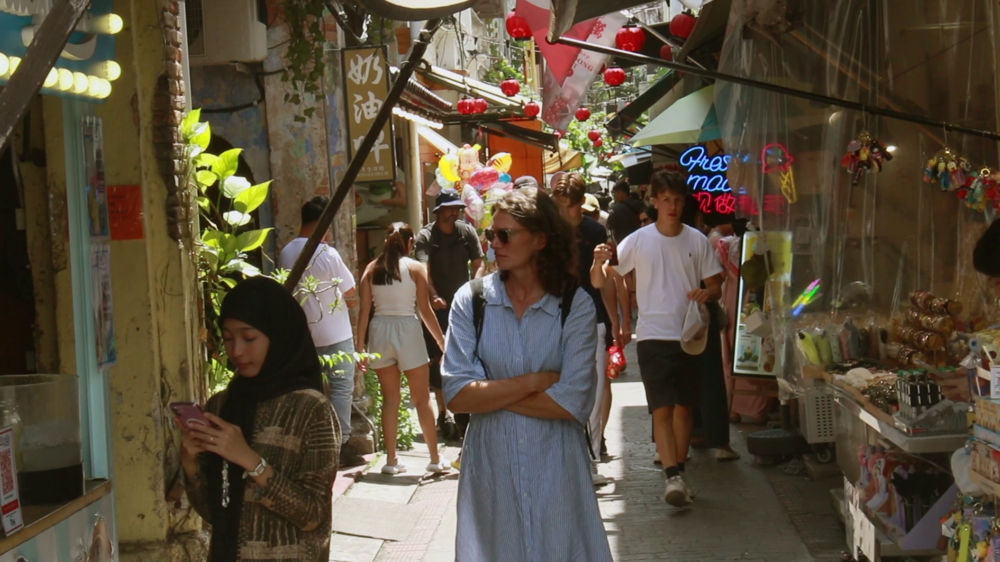
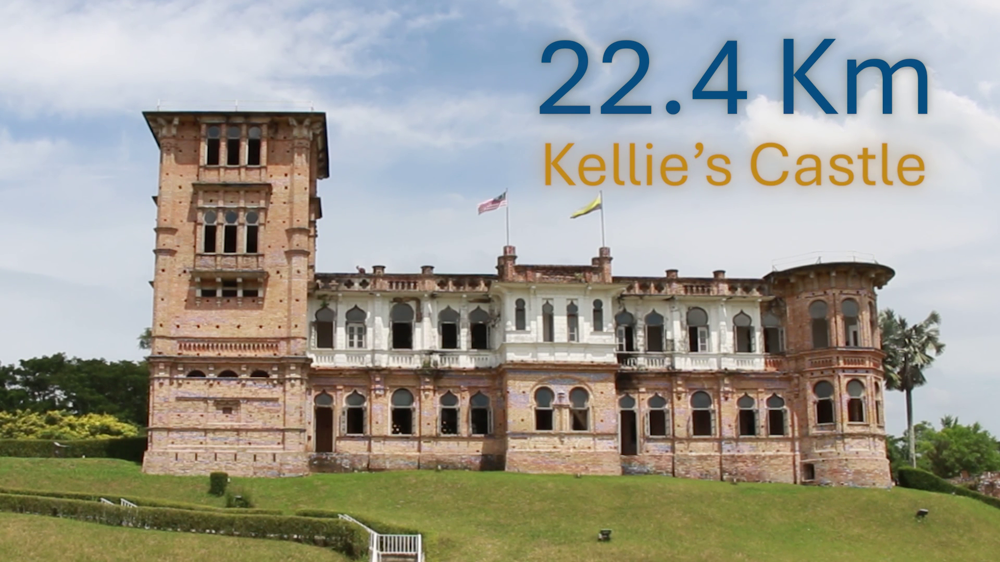
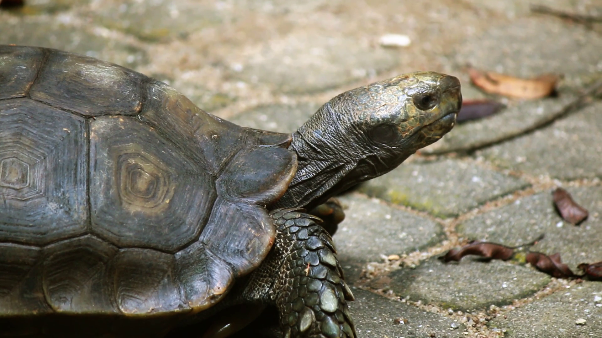

Explore beyond - UTP
À propos du projet
Cette vidéo promotionnelle a été réalisée lors de mon stage de quatre mois en Malaisie, à l'Universiti Teknologi Petronas (UTP). Elle présente les activités et les lieux à découvrir autour du campus, pour donner envie aux futurs étudiants de venir étudier à UTP.

Ecriture
Nous avons écrit la vidéo à deux. Nous avons d'abord recensé ce qui pouvait plaire à un étudiant d'UTP autour du campus : lieux touristiques et beaux points de vue, facilement accessibles pour des étudiants. Nous en avons ensuite fait un itinéraire, qui a servi de fil conducteur à la vidéo.

Réalisation & Captation
Pour gagner du temps, nous avons regroupé les lieux proches les uns des autres sur une même journée de tournage. Nous nous déplacions en voiture et filmions au fil des activités et des visites.

Montage & Post-production
J'ai monté seule la vidéo sur Premiere Pro, en réalisant également l'étalonnage et le sous-titrage. Les animations de textes et de chiffres, créées sur After Effects, indiquent aux étudiants la distance qui les sépare de chaque lieu.